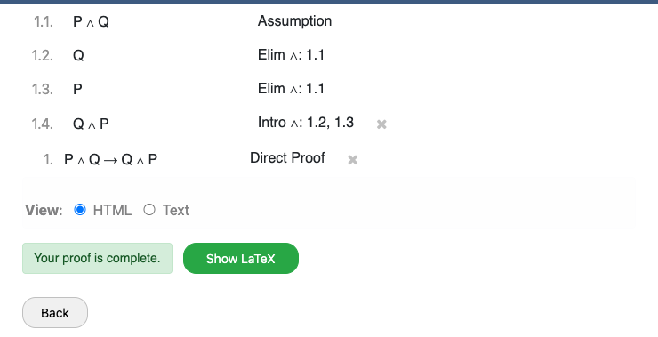

Worked Examples
These examples show complete proofs in Cozy, demonstrating various techniques.
Example 1: Commutativity of And
Theorem: Given P and Q, prove Q and P.
Rules used: elim and, intro and
1. P and Q given
2. Q elim and 1 right
3. P elim and 1 left
4. Q and P intro and 2 3Explanation: We extract each conjunct from the given (lines 2-3), then reassemble them in the opposite order (line 4).
Example 2: Modus Tollens
Theorem: Given P -> Q and not Q,
prove not P.
Rules used: absurdum, modus ponens, contradiction
1. P -> Q given
2. not Q given
3. not P absurdum (P)
3.1. P assumption
3.2. Q modus ponens 1 3.1
3.3. false contradiction 3.2 2Explanation: We use absurdum to prove not P
by assuming P and deriving a contradiction. Inside the subproof (lines 3.1-3.3),
we apply modus ponens to get Q, then contradict it with not Q.
Example 3: Direct Proof with Subproof
Theorem: Prove (P and Q) -> (Q and P) (no givens).
Rules used: direct proof, elim and, intro and
1. (P and Q) -> (Q and P) direct proof (P and Q)
1.1. P and Q assumption
1.2. Q elim and 1.1 right
1.3. P elim and 1.1 left
1.4. Q and P intro and 1.2 1.3Explanation: Since we have no givens and want to prove an implication,
we use direct proof which creates a subproof assuming the antecedent.
The subproof goal is the consequent.

Example 4: Even + Even = Even
Theorem: Given Even(a) and Even(b),
prove Even(a + b).
Variables: a, b
Rules used: defof, elim exists, algebra, intro exists, undef
1. Even(a) given
2. Even(b) given
3. exists y, a = 2*y defof Even 1
4. exists y, b = 2*y defof Even 2
5. [elim exists 3 j]
5.1. a = 2*j assumption
5.2. [elim exists 4 k]
5.2.1. b = 2*k assumption
5.2.2. a + b = 2*(j + k) algebra (a + b = 2*(j + k)) 5.1 5.2.1
5.2.3. exists y, a + b = 2*y intro exists 5.2.2 {j + k} y
6. exists y, a + b = 2*y [from subproof]
7. Even(a + b) undef Even 6Explanation: We expand the definitions of Even for both givens, extract
witnesses j and k using elim exists, use algebra to show the
sum equals 2*(j+k), then package the witness back up with intro exists and
collapse the definition.
Example 5: Existential Witness
Theorem: Given P(5), prove exists x, P(x).
Rules used: intro exists
1. P(5) given
2. exists x, P(x) intro exists 1 {5} xExplanation: We provide the witness 5 in curly braces.
Since line 1 already proves P(5), the existential is immediate.
intro exists, the witness expression goes in curly braces
{...} and the variable name follows. The line you reference must already
prove the body with the witness substituted in.